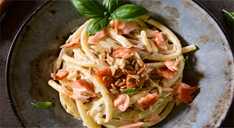

My Favorite Food!

Salmon and Roquefort pasta
This is thje best recipe you will ever make
Ingredients
- 350g pasta (Spaghetti, linguine ...)
- 2 salmon pavers
- 100 g of smoked salmon
- 20 cl of fresh cream
- 100 g of Roquefort cheese
- sunflower seeds
Directions
- Steam salmon breasts, crumble them roughly
- Cut the smoked salmon into small pieces
- Roast the sunflower seeds in a frying pan without fat
- Heat the fresh cream, add the Roquefort cheese and melt it
- Boil water for pasta, and cook as directed in instructions
- Drain the pasta and add the cream to Roquefort cheese, mix well
- Spread on plates, sprinkle with salmon, smoked salmon and sunflower seeds
- Serve immediately
For more information check out this site